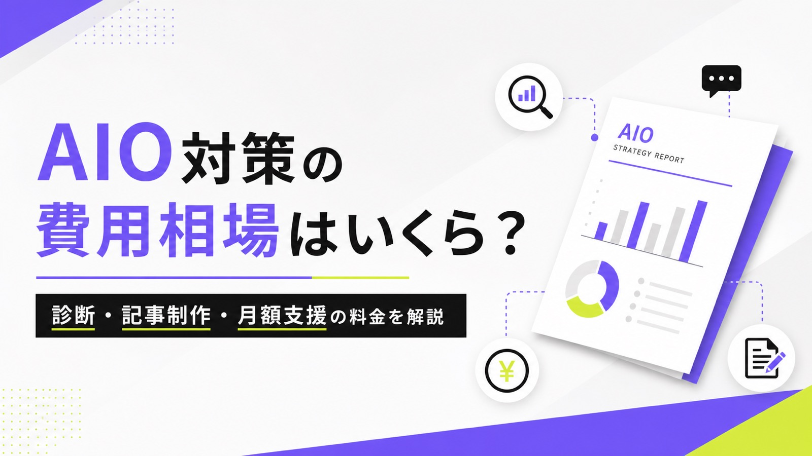
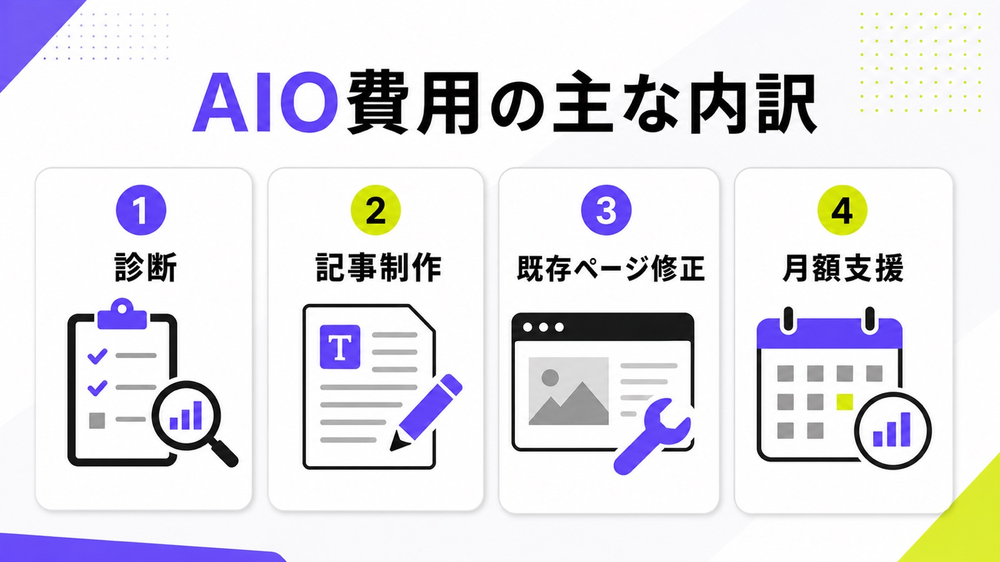
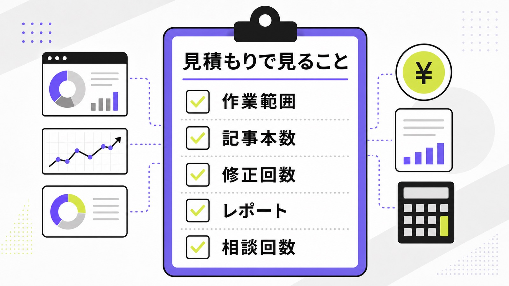
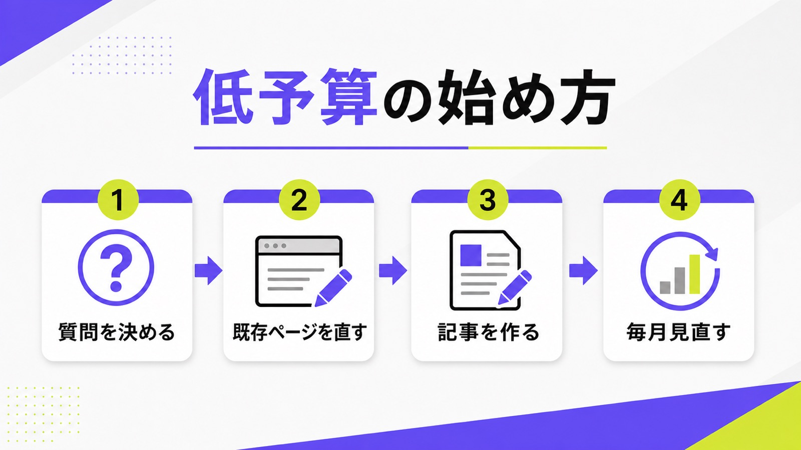

AIO対策の費用相場はいくら？診断・記事制作・月額支援の料金を解説

AIO対策を外注したいと思っても、「診断だけで足りるのか」「記事制作まで頼むべきか」「月額いくらが普通なのか」が分かりにくいですよね。料金表を見ても、AI検索対策、AIO、GEO、LLMO、SEOが混ざっていて、初心者ほど判断しづらくなります。
この記事では、AIOを「Google AI OverviewsやChatGPTなど、AI回答で見つけてもらうための対策」として扱います。基本を先に確認したい方は、AIOとSEOの違いやAIO対策会社の選び方もあわせて読むと理解しやすいです。
ここでは、AIO対策の費用相場、料金が変わる理由、安く始める方法、見積もりで見るべき項目を、専門用語を減らして説明します。最後には、AIMAの月額5万円プランでどこまで始められるかも整理します。
目次

AIO対策の費用相場の全体像
AIO対策の費用は、ざっくり言うと「調べるだけ」「記事やページを直す」「毎月相談しながら改善する」の3段階で変わります。競合記事でも、診断、継続運用、伴走支援に分けて料金を説明しているケースが多く見られます。
診断・単発型は10万〜30万円前後が目安
診断・単発型は、今のサイトがAI回答に出やすい状態か、どのページが弱いか、どんな質問で競合が出ているかを調べる支援です。費用は10万〜30万円前後で紹介されることが多く、まず現状を知りたい会社には向いています。ただし、診断だけでは記事作成や修正作業は進みません。診断後に社内で直せる人がいない場合は、改善作業の費用まで最初から確認してください。
単発診断を使うなら、レポートに「どのページを直すか」「どんな記事を作るか」「優先順位は何か」まで入っているかを見ると安心です。点数だけ、順位だけ、一般論だけの診断だと、結局次の外注費が必要になります。
記事制作・既存ページ修正は本数で変わる
AIO対策では、新しい記事を作るだけでなく、サービスページ、料金ページ、事例ページ、FAQを直す作業も重要です。記事制作は1本あたり数万円から十数万円、既存ページ修正は作業量によって数万円から見積もられることがあります。AI回答は質問に合う具体情報を拾うため、ふわっとした会社紹介だけでは弱いです。料金、比較、手順、事例など、答えになる情報をページ内に足す費用を見ておきましょう。
たとえば「AIO対策 費用」で出たいなら、費用相場、料金表、安く始める条件、失敗例、よくある質問が必要です。記事だけで説明するのか、サービスページにも反映するのかで作業量が変わるため、見積もり時点で分けて聞くと比較しやすくなります。
月額支援・伴走型は10万〜50万円以上まで幅がある
月額支援は、キーワードや質問の設計、記事作成、既存ページ修正、AI回答での表示確認、月次レポート、相談をまとめて進める形です。相場は月額10万円台から50万円以上まで幅があります。高いプランほど、調査対象AIの数、記事本数、実装範囲、レポート量が増えます。一方で初心者には、最初から大きな契約をするより、小さく毎月改善できる形のほうが失敗しにくいです。
“There are no additional technical requirements.”
Googleは、AI OverviewsやAI Modeに出るための追加の技術要件はないと説明しています。つまり、AIO対策費用は「魔法の設定代」ではなく、検索に出せるページを作り、内容を分かりやすくし、ユーザーの質問に答える情報を整えるための費用だと考えると分かりやすいです。

AIO対策の費用を左右する作業範囲
同じ「AIO対策」でも、見積もりの中身は会社によって違います。料金だけを比べると安く見えるプランでも、記事作成や修正作業が別料金なら、あとで高くなることがあります。
対象AIと質問数が増えるほど調査が重くなる
ChatGPT、Google AI Overviews、AI Mode、Perplexity、Geminiなど、見るAIが増えるほど確認作業は増えます。さらに、「おすすめ会社」「費用」「比較」「地域」「業種」など質問数を増やすと、記録と分析にも時間がかかります。最初から100個の質問を見るより、問い合わせに近い10〜20個に絞るほうが実用的です。低予算では、まず質問数を絞ることで費用を抑えられます。
質問を増やしすぎると、レポートは厚くなりますが、直すページが追いつかないことがあります。最初は売上に近い質問、営業現場でよく聞かれる質問、競合比較に使われそうな質問を優先し、毎月少しずつ広げるほうが無駄が少ないです。
新規記事本数と既存ページ修正回数で変わる
AIO対策で一番お金がかかりやすいのは、調査ではなく制作と修正です。新規記事を毎月何本作るのか、既存ページを何ページ直すのか、修正は何回まで含むのかで見積もりが大きく変わります。記事を量産するだけではなく、サービスページや料金ページに答えを足す作業も大切です。見積もりでは、本数と修正回数を必ず数字で確認しましょう。
特に初心者は、「記事1本」と「公開できる記事1本」が同じ意味か確認してください。構成だけ、本文だけ、画像なし、入稿なしという場合もあります。公開まで頼みたいなら、画像、内部リンク、メタ情報、FAQ、修正対応まで含むかを見ます。
レポート・相談・実装作業まで含むかを見る
月次レポートがあっても、何を直すか分からなければ成果につながりません。逆に、相談回数が多く、記事修正や内部リンク追加まで含む支援なら、初心者でも進めやすくなります。構造化データ、CMS入稿、画像作成、FAQ追加、計測設定などは別料金になりやすい項目です。安く見える見積もりでも、実装まで含むかを見ないと比較できません。

| 確認項目 | 見る理由 | 質問例 |
|---|---|---|
| 対象AI | 調査範囲と作業量が変わるため | ChatGPTとGoogle AI Overviewsの両方を見ますか？ |
| 記事本数 | 制作費の中心になりやすいため | 月に何本まで作れますか？構成作成だけですか？ |
| 既存ページ修正 | AI回答に引用される情報を足すため | 料金ページやFAQの修正も含まれますか？ |
| レポート | 成果判断に使うため | 社名表示、引用URL、競合名まで見ますか？ |
| 相談回数 | 初心者ほど途中相談が必要なため | 月内の質問や追加相談に上限はありますか？ |
安く始めるならどこまで必要か
AIO対策は、最初から大きなツールや高額な伴走支援を入れなくても始められます。大切なのは、見込み客がAIに聞きそうな質問を決め、その質問に答えるページを整えることです。
まず質問と重要ページを絞る
最初にやるべきことは、見込み客が聞きそうな質問を10〜20個に絞ることです。「AIO対策 費用」「AI検索対策 会社」「中小企業 AIO」「地域名 AI検索対策」のように、問い合わせに近い言葉を選びます。次に、それぞれの質問に答えるページを決めます。料金ページ、サービスページ、比較記事、FAQなどです。低予算では、広く薄くやるより重要ページから直すほうが効果を見やすくなります。
質問とページを対応させると、何を作るべきかが見えます。質問に答えるページがないなら新規記事、ページはあるが説明が弱いなら既存ページ修正、料金や事例が足りないならサービスページ改善、というように作業を分けられます。
高額ツールより先に本文と内部リンクを整える
AI回答で引用されるかを追うツールは便利ですが、ページ内に答えがなければ数字を見ても改善できません。まずは、料金の目安、対応範囲、選ばれる理由、事例、よくある質問を本文に入れましょう。関連する記事同士を内部リンクでつなぐことも大切です。AIO対策は特殊な裏技ではなく、読者が知りたいことをページ内に明記する作業から始まります。
ツールは「今どう見られているか」を知る道具です。一方で、本文や内部リンクは「次にどう見られたいか」を作る作業です。予算が限られる会社ほど、先に直せるページを増やし、その後で必要な範囲だけ計測を強化すると続けやすくなります。
AIMAなら月5万円で相談と改善を回せる
AIMAは、LLMO・GEO・AIOを含むAI検索対策を、月額5万円から相談できます。相談回数に上限を置かず、支援範囲内で記事作成、既存記事の修正、FAQ追加、内部リンク改善、テーマ相談を進めます。最低契約期間もありません。高額な診断だけで終わらせず、実際にページを直したい会社には、月5万円で小さく開始できる形が合いやすいです。詳しくはAIMAのサービス内容をご覧ください。
“How often URLs from your site appeared in generative AI features in Search and Discover.”
出典：Google Search Central「Introducing Search Generative AI performance reports in Search Console」
Googleは2026年6月3日、Search Consoleで生成AI機能内の表示を見られるレポートを発表しました。すべてのサイトに広く使える段階ではありませんが、今後はAI回答での表示を確認しながら改善する流れがより重要になります。

見積もりで確認するチェックポイント
AIO対策の見積もりを見るときは、金額だけで決めないでください。大切なのは、何をしてくれるのか、何が別料金なのか、成果をどう見るのかです。
料金に含まれる成果物を確認する
まず、納品物を確認します。診断レポートだけなのか、記事構成、本文、画像、CMS入稿、既存ページ修正、FAQ追加、内部リンク追加まで含むのかで価値はまったく変わります。初心者の場合、レポートだけ受け取っても次に何をすればよいか分からないことがあります。見積もりには、納品されるものを具体的に書いてもらいましょう。
よい見積もりは、「毎月の記事数」「修正ページ数」「相談方法」「レポート形式」「公開作業の有無」が分かります。反対に、AIO対策一式とだけ書かれている場合は、後から認識違いが起きやすいので、契約前に分解してもらうことが大切です。
別料金になりやすい作業を聞く
別料金になりやすいのは、追加記事、修正回数超過、画像作成、CMS入稿、計測設定、構造化データ、外部ツール利用料、会議追加などです。安いプランに見えても、実際に進めると必要な作業が別料金になり、合計が高くなることがあります。契約前に、「この金額でサイト上に反映されるところまで行けますか」と聞くと、追加費用の有無が分かりやすいです。
また、ツール利用料が代理店費用に含まれるのか、自社で直接契約するのかも確認しましょう。小さな会社では、使いこなせない高機能ツールより、必要な質問だけを毎月見て、記事とページ修正に予算を回すほうが成果に近い場合があります。
成果はクリック数だけで見ない
AIO対策では、検索順位やクリック数だけでは成果を見きれません。AI回答で社名が出るか、引用URLに自社ページが入るか、競合名より上で紹介されるか、指名検索や問い合わせが増えるかを見ます。ChatGPT Searchのように引用元が表示される場面もあります。だから、月次レポートでは表示と引用も確認しましょう。
“ChatGPT responses that use search can include inline citations.”
出典：OpenAI Help Center「ChatGPT search for Enterprise and Edu」
AIO対策の費用に関するよくある質問
AIO対策は毎月いくらから始められますか？
診断だけなら単発で始められます。継続支援は月額10万円台から50万円以上まで幅があります。AIMAは月額5万円で、相談、記事作成、既存ページ修正を小さく回せるため、最初から大きな契約をしたくない会社にも向いています。
SEO対策とは別料金でAIO対策が必要ですか？
必ず別料金が必要とは限りません。Googleは、AI検索でもSEOの基本が重要だと説明しています。既存のSEO施策に、AI回答で引用されやすいFAQ、料金、比較、事例の整備を足す考え方が現実的です。まずは今あるページを活用できるか見ましょう。
AIO対策の効果は何か月で判断すればいいですか？
最低でも3か月は、同じ質問、同じページ、同じ指標で見たほうが判断しやすいです。記事公開後すぐに問い合わせが増えないこともあります。まずはAI回答での社名表示、引用URL、指名検索、問い合わせの変化を見ます。短期で見るなら表示の変化を先に確認しましょう。
まとめ
AIO対策の費用は、診断、記事制作、既存ページ修正、月額支援のどこまで頼むかで変わります。診断だけなら単発で始めやすい一方、成果につなげるには、質問に答えるページを作る、既存ページを直す、毎月表示と引用を確認する流れが必要です。
見積もりでは、料金総額よりも、対象AI、質問数、記事本数、修正回数、相談回数、実装範囲を確認してください。安いプランでも、改善作業が別料金なら結果的に高くなることがあります。
AIMAは、LLMO特化、月額5万円、相談回数の上限なし、記事作成・修正込みで、AI検索に選ばれるための情報整備を支援します。まずは無料LLMO診断またはお問い合わせからご相談ください。